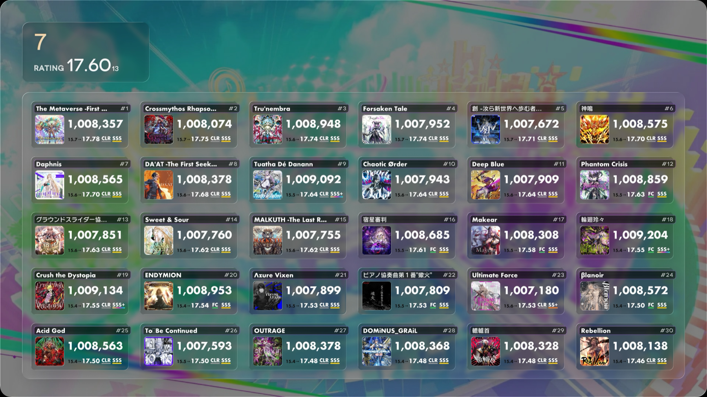
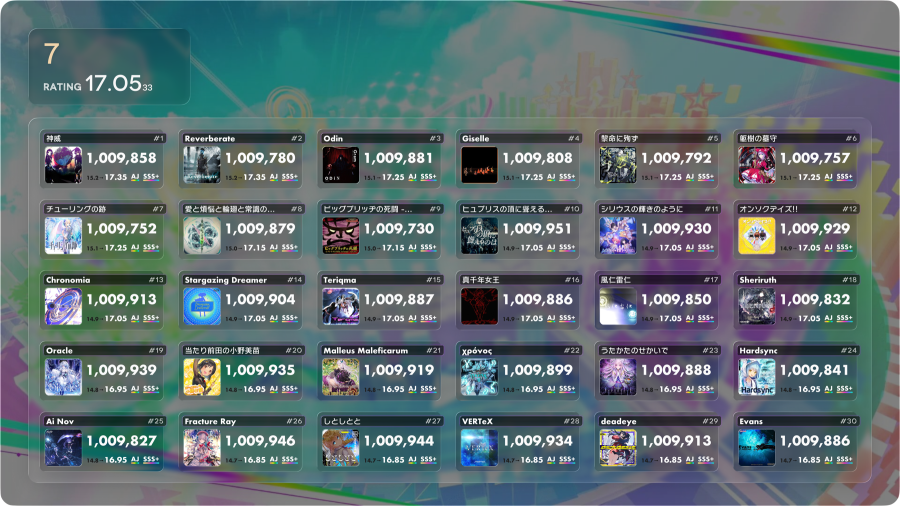
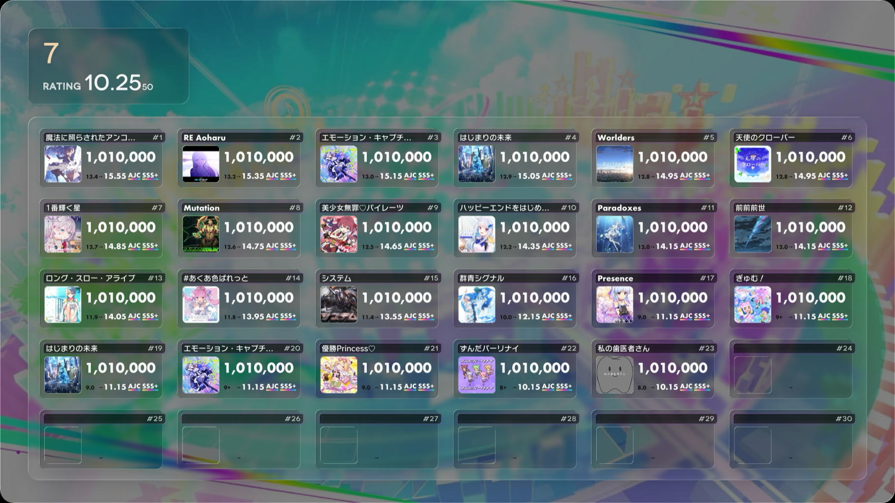
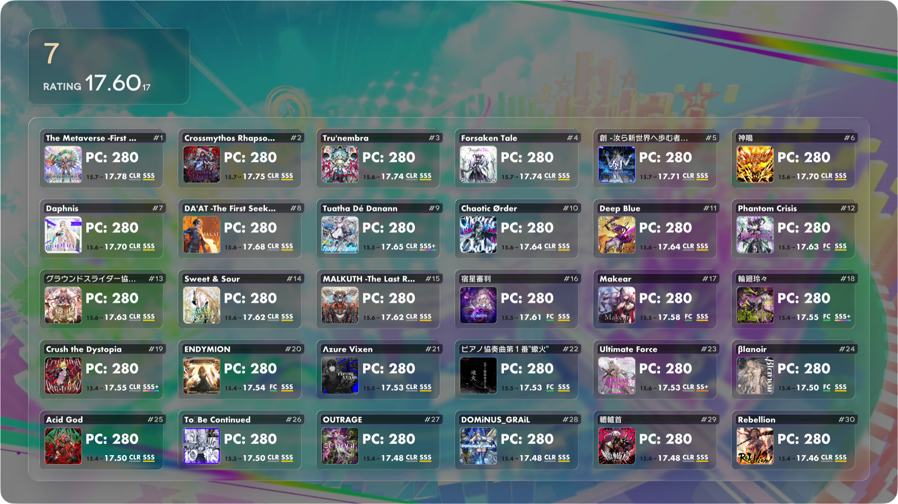
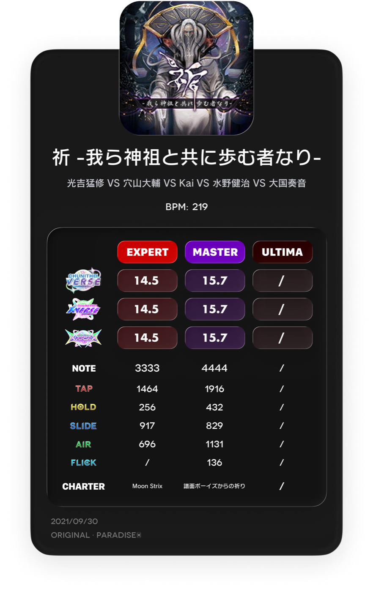
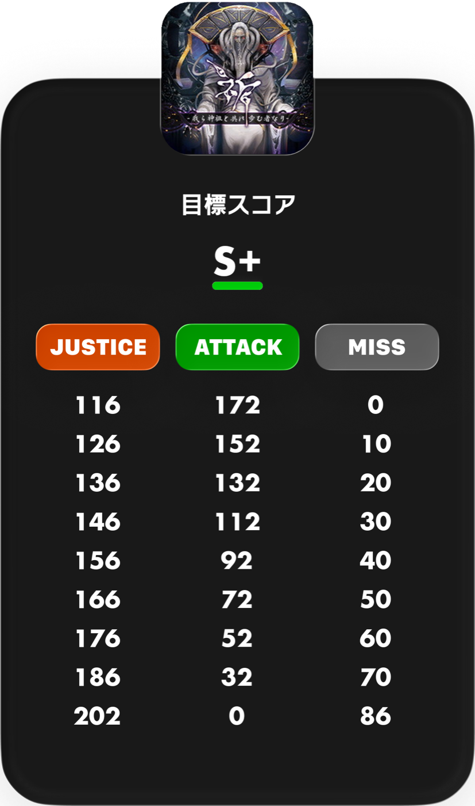
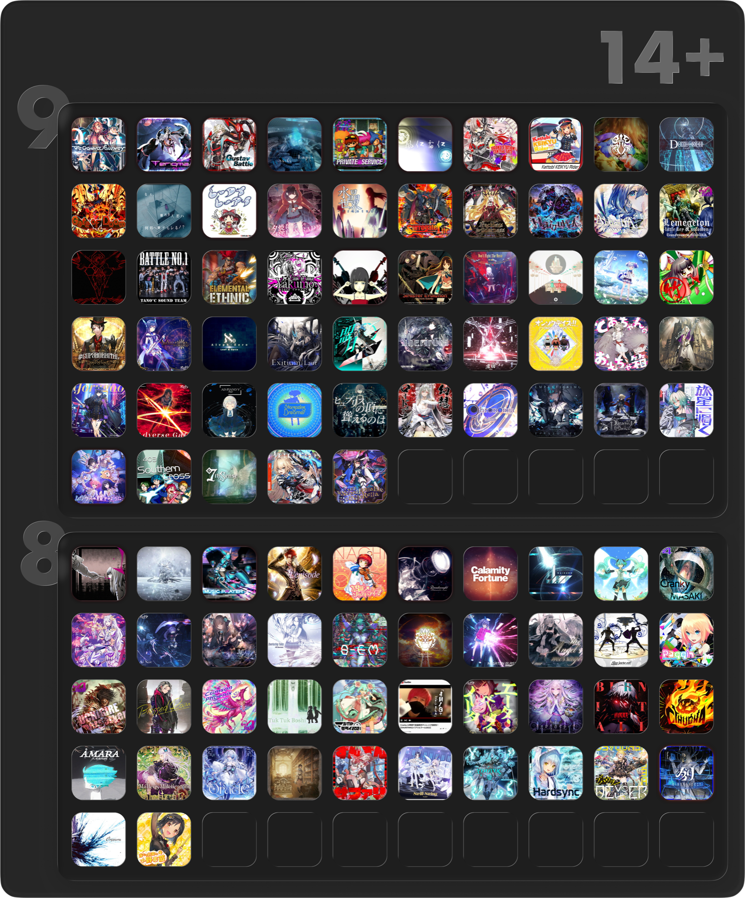
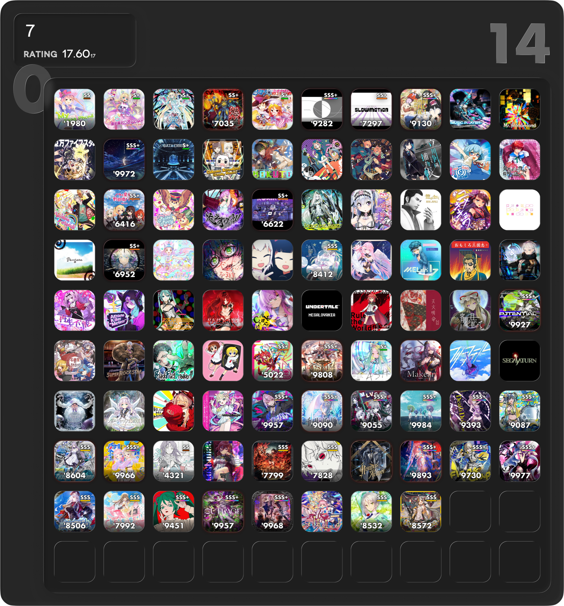

主力プロジェクト
CHUNITHM 雲に凪 Bot
画像で伝える。コマンドで完結する。 CHUNITHM の記録と可視化を、ひとつの体験にまとめた Bot システムです。

まずは、ハイライトから。
大きく見せたい機能と、静かに支える機能。
Best 30
4つの B30。
4つの視点。
Best 30、AJ Best 30、AJC Best 30、PC 30。 同じプレイヤーデータを、目的ごとに異なる見方で切り出せます。 単にスコアを並べるのではなく、画像として「見た瞬間に分かる」ことを重視しました。



chuinfo
楽曲情報を、
1枚の UI に。
曲名、難易度、譜面情報、見た目の印象までを一枚のカードに集約。 検索体験と視認性の両方を崩さず、Bot から返ってきた時にそのまま使える情報量を目指しました。


chuborder
残りの余白を、
可視化する。
S / SS / SSS / 99AJ から任意点数まで。 どのくらいのミス許容が残っているかを、計算結果ではなく視覚として返す機能です。 実用性の高さと、見て気持ちいい表現の両方を強く意識したセクションです。
chulvl / chusc
全体も、個人も。
レベル帯をひと目で。
全曲一覧としての `chulvl` と、個人達成状況としての `chusc`。 同じレベル帯でも、全体視点と個人視点を分けて見せることで、進行状況と課題を整理しやすくしています。


そのほかの機能
小さく見えて、
毎日効く機能たち。
別名検索
曲名の揺れや短縮形を吸収して、入力しやすさを上げます。
手動登録
`/upload` と `/uploadpc` で、スコアや PC を後から補完できます。
アカウント管理
`/create`、`/bind`、`/rename` で、プレイヤー名の運用を整理します。
譜面プレビュー
`/chuchart` で、譜面画像をそのまま Bot から確認できます。
公式同期
CHUNITHM-NET のデータ取得と取り込みを整理し、更新作業を一本化します。
ヘルプと補助導線
画像版 `/help`、難易度補完、色プレフィックス認識で導線を整えます。